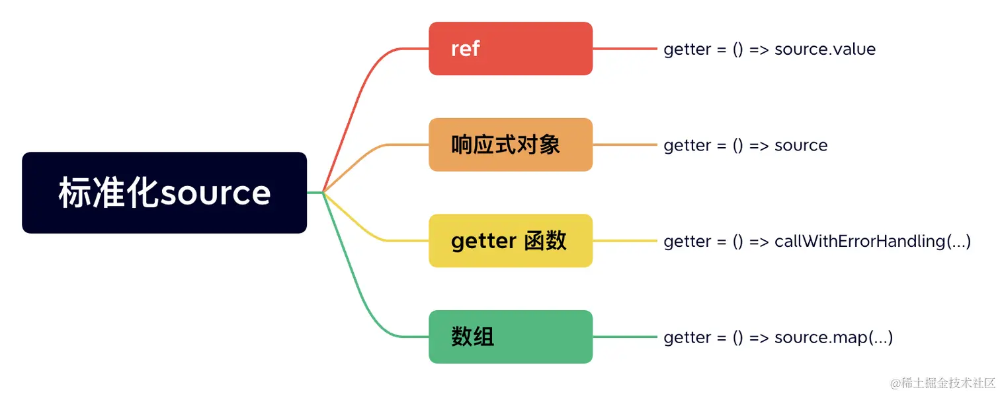

在组合式 API 中，我们可以使用 watch 函数在每次响应式状态发生变化时触发回调函数，watch 的第一个参数可以是不同形式的数据类型：它可以是一个 ref（包括计算属性）、一个响应式对象、一个 getter 函数、或多个数据源组成的数组。
js复制代码const x = ref(0)
const y = ref(0)
const state = reactive({ num: 0 })
// 单个 ref
watch(x, (newX) => {
console.log(`x is ${newX}`)
})
// getter 函数
watch(
() => x.value + y.value,
(sum) => {
console.log(`sum of x + y is: ${sum}`)
}
)
// 响应式对象
watch(
state,
(newState) => {
console.log(`new state num is: ${newState.num}`)
}
)
// 多个来源组成的数组
watch([x, () => y.value], ([newX, newY]) => {
console.log(`x is ${newX} and y is ${newY}`)
})
了解了一些基础的 watch 使用示例后，我们开始分析一下 watch 函数是如何实现的呢。
先来看一下 watch 函数实现的代码：
js复制代码function watch(source, cb, options) {
// ...
return doWatch(source, cb, options)
}
function doWatch(source, cb, { immediate, deep, flush, onTrack, onTrigger } = EMPTY_OBJ) {
// ...
}
watch 函数内部是通过 doWatch 来执行的，在分析 doWatch 函数实现前，我们先看看前面的示例中，watch 监听的 source 可以是多种类型，一个函数可以支持多种类型的参数入参，那么实现该函数最好的设计模式就是 adapter 代理模式。就是将底层模型设计成一致的，抹平调用差异，这也是 doWatch 函数实现的第一步：标准化 source 参数。
一起来看看其中的实现：
js复制代码function doWatch(source, cb, { immediate, deep, flush, onTrack, onTrigger } = EMPTY_OBJ) {
// ...
// source 不合法的时候警告函数
const warnInvalidSource = (s: unknown) => {
warn(
`Invalid watch source: `,
s,
`A watch source can only be a getter/effect function, a ref, ` +
`a reactive object, or an array of these types.`
)
}
const instance = currentInstance
let getter
let forceTrigger = false
let isMultiSource = false
// 判断是不是 ref 类型
if (isRef(source)) {
getter = () => source.value
forceTrigger = isShallow(source)
}
// 判断是不是响应式对象
else if (isReactive(source)) {
getter = () => source
deep = true
}
// 判断是不是数组类型
else if (isArray(source)) {
isMultiSource = true
forceTrigger = source.some(s => isReactive(s) || isShallow(s))
getter = () =>
source.map(s => {
if (isRef(s)) {
return s.value
} else if (isReactive(s)) {
return traverse(s)
} else if (isFunction(s)) {
return callWithErrorHandling(s, instance, ErrorCodes.WATCH_GETTER)
} else {
__DEV__ && warnInvalidSource(s)
}
})
}
// 判断是不是函数类型
else if (isFunction(source)) {
if (cb) {
// getter with cb
getter = () =>
callWithErrorHandling(source, instance, ErrorCodes.WATCH_GETTER)
} else {
// 如果只有一个函数作为source 入参，则执行 watchEffect 的逻辑
// ...
}
}
// 都不符合，则告警
else {
getter = NOOP
__DEV__ && warnInvalidSource(source)
}
// 深度监听
if (cb && deep) {
const baseGetter = getter
getter = () => traverse(baseGetter())
}
// ...
}
由于 doWatch 函数代码量比较多，我们先一部分一部分地来解读，这里我们只关注于标准化 source 的逻辑。可以看到 doWatch 函数会对入参的 source 做不同类型的判断逻辑，然后生成一个统一的 getter 函数：

getter 函数就是简单地对不同数据类型设置一个访问 source 的操作，比如对于 ref 就是一个创建了一个访问 source.value 的函数。
那么为什么需要访问呢？由之前的响应式原理我们知道，只有在触发 proxy getter 的时候，才会进行依赖收集，所以，这里标准化的 source 函数中，不管是什么类型的 source 都会设计一个访问器函数。
另外，需要注意的是当 source 是个响应式对象时，源码中会同时设置 deep = true。这是因为对于响应式对象，需要进行深度监听，因为响应式对象中的属性变化时，都需要进行反馈。那是怎么做到深度监听的呢？在回答这个问题之前，我们前面说了监听一个对象的属性就是需要先访问对象的属性，触发 proxy getter，把副作用 cb 收集起来。源码中则是通过 traverse 函数来实现对响应式对象属性的遍历访问：
js复制代码export function traverse(value, seen) {
// ...
if (isRef(value)) {
// 如果是 ref 类型，继续递归执行 .value值
traverse(value.value, seen)
} else if (Array.isArray(value)) {
// 如果是数组类型
for (let i = 0; i < value.length; i++) {
// 递归调用 traverse 进行处理
traverse(value[i], seen)
}
} else if (isPlainObject(value)) {
// 如果是对象，使用 for in 读取对象的每一个值，并递归调用 traverse 进行处理
for (const key in value) {
traverse((value as any)[key], seen)
}
}
return value
}
前面说到，我们通过一系列操作，标准化了用户传入的 source 成了一个 getter 函数，此时的 getter 函数一方面还没有真正执行，也就没有触发对属性的访问操作。
watch 的本质是对数据源进行依赖收集，当依赖变化时，回调执行 cb 函数并传入新旧值。所以我们需要构造一个副作用函数，完成对数据源的变化追踪：
js复制代码function doWatch(source, cb, { immediate, deep, flush, onTrack, onTrigger } = EMPTY_OBJ) {
// ...
const effect = new ReactiveEffect(getter, scheduler)
}
这里的 getter 就是前面构造的属性访问函数，我们在介绍响应式原理的章节中，介绍过 ReactiveEffect 函数，这里再来回顾一下 ReactiveEffect 的实现：
js复制代码class ReactiveEffect {
constructor(
public fn: () => T,
public scheduler: EffectScheduler | null = null,
scope?: EffectScope
) {
recordEffectScope(this, scope)
}
run() {
// ...
this.fn()
}
}
这里细节部分可以详细阅读响应式原理的部分，我们只需要知道这里的 ReactiveEffect run 函数内部执行了 this.fn() 也就是上面传入的 getter 函数，所以，本质上是在此时完成了对 watch source 的访问。
然后再看一下 ReactiveEffect 的第二个参数 scheduler，是如何构造的呢？
js复制代码function doWatch(source, cb, { immediate, deep, flush, onTrack, onTrigger } = EMPTY_OBJ) {
// ...
let oldValue = isMultiSource
? new Array(source.length).fill(INITIAL_WATCHER_VALUE)
: INITIAL_WATCHER_VALUE
const job = () => {
// 被卸载
if (!effect.active) {
return
}
if (cb) {
// 获取新值
const newValue = effect.run()
// ...
// 执行 cb 函数
callWithAsyncErrorHandling(cb, instance, ErrorCodes.WATCH_CALLBACK, [
newValue,
// 第一次更改时传递旧值为 undefined
oldValue === INITIAL_WATCHER_VALUE
? undefined
: (isMultiSource && oldValue[0] === INITIAL_WATCHER_VALUE)
? []
: oldValue,
onCleanup
])
oldValue = newValue
} else {
// watchEffect
effect.run()
}
}
let scheduler
// 直接赋值为 job 函数
if (flush === 'sync') {
scheduler = job
} else if (flush === 'post') {
// 渲染后执行，放入 postRenderEffect 队列
scheduler = () => queuePostRenderEffect(job, instance && instance.suspense)
} else {
// 默认是渲染更新之前执行，设置 job.pre = true
job.pre = true
if (instance) job.id = instance.uid
scheduler = () => queueJob(job)
}
}
scheduler我们在批量调度更新章节有简单介绍过，本质这里是根据不同的watch options中的flush参数来设置不同的调度节点，这里默认是渲染更新前执行，也就是在异步更新队列queue执行前执行。
scheduler 核心就是将 job 放入异步执行队列中，但有个特殊，也就是 flush = 'sync' 时，是放入同步执行的。那么 job 是个什么啥玩意呢？
上述代码的注释已经很详尽了，job 其实就是一个用来执行回调函数 cb 的函数而已，在执行 cb 的同时，传入了 source 的新旧值。
前面我们说到了，ReactiveEffect 内部的 run 函数，执行了依赖访问的 getter 函数，所以 run 函数是如何被执行的呢？
js复制代码function doWatch(source, cb, { immediate, deep, flush, onTrack, onTrigger } = EMPTY_OBJ) {
//...
// 如果存在 cb
if (cb) {
// 立即执行
if (immediate) {
// 首次直接执行 job
job()
} else {
// 执行run 函数，获取旧值
oldValue = effect.run()
}
}
}
可以看到在执行 effect.run 的前面判断了是否是立即执行的模式，如果是立即执行，则直接执行上面的 job 函数，而此时的 job 函数是没有旧值的，所以此时执行的 oldValue = undefined。
最后，会返回侦听器销毁函数，也就是 watch API 执行后返回的函数。我们可以通过调用它来停止 watcher 对数据的侦听。
js复制代码function doWatch(source, cb, { immediate, deep, flush, onTrack, onTrigger } = EMPTY_OBJ) {
//...
return () => {
effect.stop()
if (instance && instance.scope) {
remove(instance.scope.effects!, effect)
}
}
}
销毁函数内部会执行 effect.stop 方法，用来停止对数据的 effect 响应。并且，如果是在组件中注册的 watcher，也会移除组件 effects 对这个 runner 的引用。
所谓 watch，就是观测一个响应式数据或者监测一个副作用函数里面的响应式数据，当数据发生变化的时候通知并执行相应的回调函数。而内部实现，就是通过构造一个 effect 副作用对象，通过对 watch 监听属性的访问触发副作用收集，当修改监听属性时，根据 flush 的状态触发 job 的不同阶段更新。